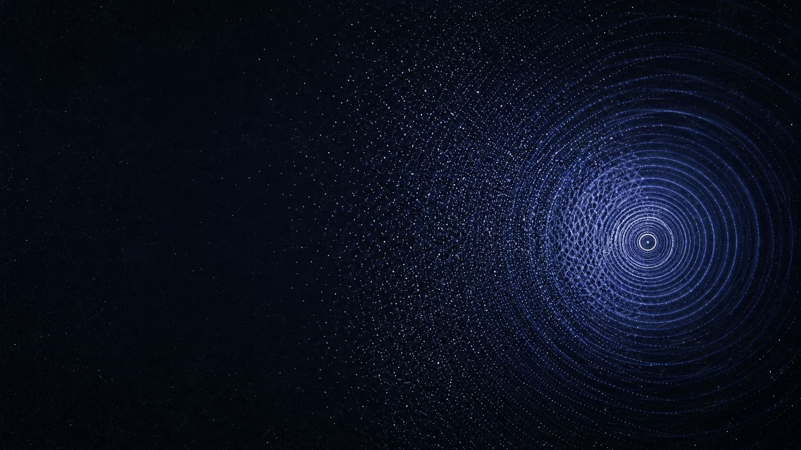

Systems research
Studying complex systems, incentives, and the conditions that shape collective outcomes.
Critical Mass Labs is an independent research and development studio for systems that matter over time.
Our approach
Our practice connects research, prototyping, and clear documentation. We make space for uncertainty, then build with intention.
Studying complex systems, incentives, and the conditions that shape collective outcomes.
Testing ideas through small, legible experiments before they become larger commitments.
Making methods, decisions, and open questions easier to examine and improve.